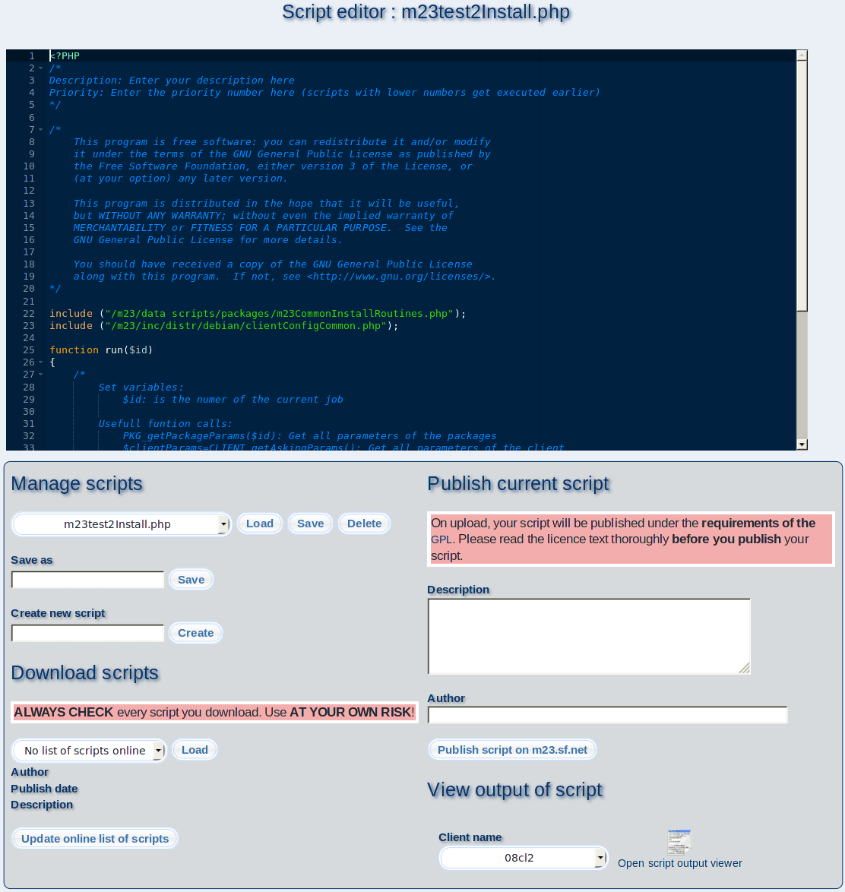

With the script editor the execution of recurrent jobs is as easy as the installation of a package. The editor helps you to create your own scripts and offers the complete functional range of m23 to generate the client-side executable BASH code. You can use any BASH command and all command line utilities installed on the clients. An overview of all m23 commands can be found in the "Development Guide" that is linked in the menu on the left side.
- Open an existing script: Choose the script from the list under "Open file for editing" and click on "Load". The source code will be shown in the editor window.
- Create a new script: Enter the name for the new script at "Create new script" and confirm with a click on "Create". A short example script you can edit will be loaded into the editor window.
-
- Save and delete script: Click on "Save" or "Delete" for the desired action. The action applies to the currently loaded script.
- Share your scripts with other m23 users: The editor contains an easy function to share your scripts with other m23 users and open it for a bigger audience. All scripts are published on the m23 webpage under the category "Scripts of m23 users". Please enter a short text about the purpose of your script under "Description" to upload it. Then add your identification code, your name or another word for identification of your script at "Author". To finally upload the script click on "Plublish script on m23.sf.net". Your script will be uploaded to the m23 website immediately.
You aggree to your script being published under the terms of the GPLv2, if you want to publish your script on the m23 website.
Subsections
dodger
2012-11-22